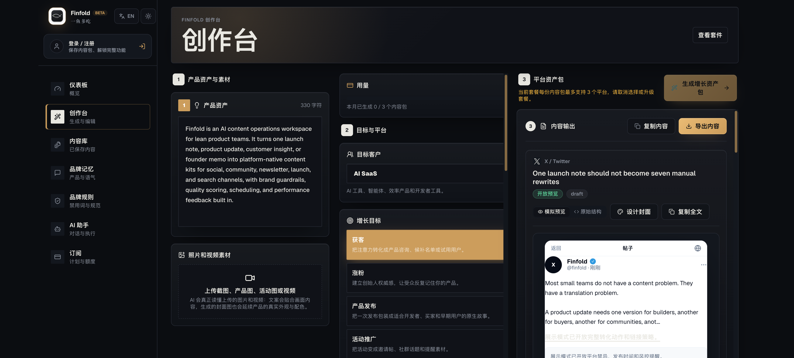
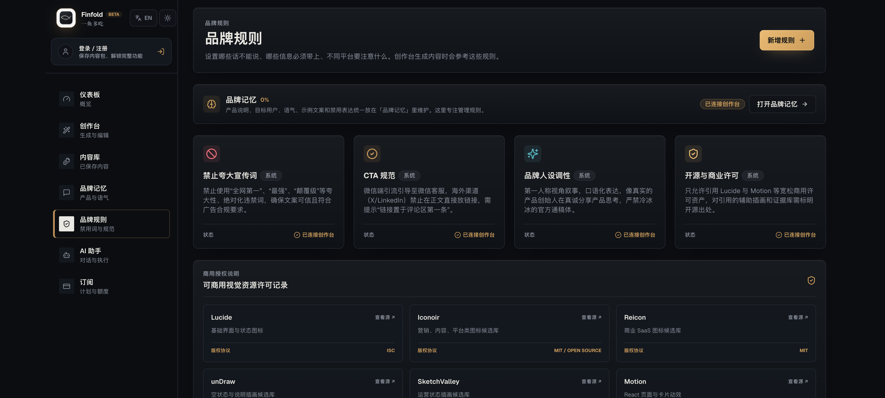
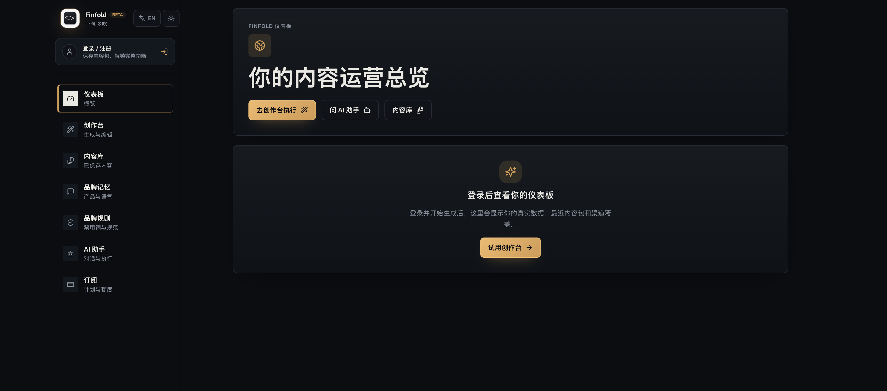

94%
跨渠道复用多数营销者会复用同一素材，但仍靠人工适配。

01 / 09 · ORIGIN · 2026
X 要短，小红书要从痛点开头，LinkedIn 要正式，Reddit 一眼就能闻出广告味，公众号还得重新排版。那天下午，我没做产品，光在给同一条信息换七副嗓子。最后七篇都透着一股 AI 味。
体验真实产品 →02 / WHY THIS
起因很小：我只想发一条产品更新。结果 X 要先制造冲突，小红书要把痛点说成人话，LinkedIn 要讲业务可信度，Reddit 要先贡献价值，Product Hunt 还等着一句能转化的 CTA。复制粘贴只省了三秒，后面每个平台都得重来。
我也试过把整件事丢给通用聊天机器人。它确实能写得更快，但把七次手工改写，换成了七次 prompt 抽卡。问题没消失，只是从“我来翻译”变成了“我来猜模型这次懂没懂”。
多数营销者会复用同一素材，但仍靠人工适配。
小团队把大量时间耗在平台改写上。
团队仍会把同一段内容直接搬到不同平台。
独立开发者和精简团队通常养不起完整内容团队。
外部方向信号：GoHighLevel 2025、SHNOCO Content Repurposing 2026。用于校验问题方向，不是 Finfold 的产品 KPI。
03 / DECISION
开发最快。但用户生成完还得自己分平台、比较、编辑、保存，七个标签页一个没少。
结果稳定，却只会换格式。平台的语气、互动方式和禁忌仍然靠用户自己懂。
左边放原始信号，中间放目标与平台，右边放可编辑输出。代价是移动端更难做；最新一轮我专门修了窄屏溢出。
04 / 13 PLATFORMS
“平台原生”不是改个字数限制。每个平台都在奖励不同的行为：有人要转发，有人要收藏，有人要讨论，有人要下单。Finfold 把这些差异写成规则，不让用户每次从头猜。
前两行制造冲突，用短句推动转发。
口语表达，强化收藏感与行动清单。
少吹概念，多讲流程、成本和团队效率。
先给价值，保留讨论语气和上下文。
把方法讲开，承接信任与长文沉淀。
讲清产品、受众、收益和行动入口。
05 / THE MOAT

我愿意下注的是这一层：同一条内容经过发布、编辑和真实表现，最后变成下一轮生成的上下文。用户改过什么、哪条内容被判定“有用”、哪个平台带来点击或线索，都不能只躺在报表里。
06 / THE MISTAKE
第一版 Dashboard 上有“42 待发布、11 待审核、18 已排期”。看起来像个成熟 SaaS。问题也很简单：它们不是用户数据。那张图骗不了评委，更骗不了我自己。后来我把 silent mock fallback 拿掉：模型失败就明确失败，没数据就老老实实显示没数据。
“AI 产品的专业感，不靠假装从不失败。它靠失败时不撒谎、不拖垮别的工作，还给用户一条能恢复的路。”
DESIGN CHANGE · 独立输出状态 / 单卡重试 / 显式错误 / 无静默假数据
07 / LIVE PRODUCT

创作台、13 平台规则、品牌记忆、显性反馈、表现回流、收费与种子运营已经进入实现。最新迭代继续补上周计划持久化、“今天去生成”和移动端窄屏修复。
边界：这些证明的是仓库实现与构建状态，不冒充真实用户量、留存、收入或统计显著增长。
08 / MY ROLE
作为 Founder / Product Designer，我负责问题定义、信息架构、产品机制、交互、设计系统、Landing Page、商业化叙事和参赛材料；同时直接跟进生成路径、权限、计费、反馈与构建验证，让设计选择能在真实代码里成立。
这个项目最值钱的部分，也不是“我会做一套 AI SaaS 界面”。是我知道什么时候该用 AI，什么时候要让人确认，什么时候必须承认数据还没有。
09 / TRY IT
把一条真实 launch note 粘进去，看 13 个平台是不是各说各的地道话。工作台已经上线。
FINFOLD.APP
体验真实产品 →